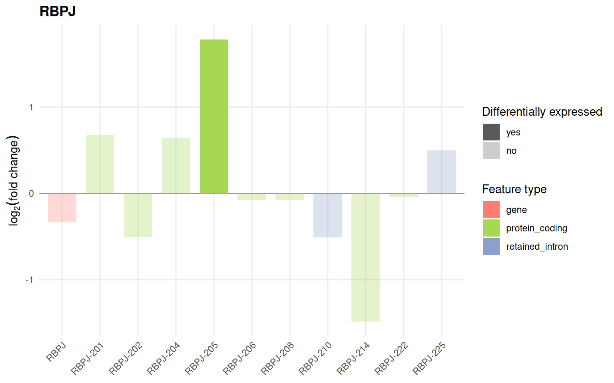

library(isoformic)
library(dplyr)
extdata <- fs::path_package("isoformic", "extdata")
fs::dir_ls(extdata)
#> /home/runner/work/_temp/Library/isoformic/extdata/c2.cp.reactome.v2023.1.Hs.symbols.gmt.txt
#> /home/runner/work/_temp/Library/isoformic/extdata/coding_model
#> /home/runner/work/_temp/Library/isoformic/extdata/example.gff3
#> /home/runner/work/_temp/Library/isoformic/extdata/example_experiment
#> /home/runner/work/_temp/Library/isoformic/extdata/knockdown
#> /home/runner/work/_temp/Library/isoformic/extdata/knockdown_annotation
#> /home/runner/work/_temp/Library/isoformic/extdata/mini_annotation
#> /home/runner/work/_temp/Library/isoformic/extdata/mini_draws.parquet
#> /home/runner/work/_temp/Library/isoformic/extdata/mini_quants
#> /home/runner/work/_temp/Library/isoformic/extdata/oarfish
#> /home/runner/work/_temp/Library/isoformic/extdata/oarfish_sc
#> /home/runner/work/_temp/Library/isoformic/extdata/pe_abundance.parquet
#> /home/runner/work/_temp/Library/isoformic/extdata/pe_col_data.parquet
#> /home/runner/work/_temp/Library/isoformic/extdata/pe_deg.parquet
#> /home/runner/work/_temp/Library/isoformic/extdata/pe_det.parquet
#> /home/runner/work/_temp/Library/isoformic/extdata/reactome_subset.gmtThe isoformic method
isoformic interprets RNA-seq data at the level of annotated transcripts. Instead of asking only whether a gene changes between conditions, it asks which of its isoforms change, what type of transcript they are (protein coding, retained intron, nonsense-mediated decay, …) and how the expression of the gene is distributed across them.
Everything revolves around the IsoformicExperiment object. It holds, for the same samples, transcript-level assays, gene-level assays derived from them, the exon structures of every annotated transcript and the differential expression results, all backed by Parquet files on disk.
This article builds the object from quantification and differential expression tables and shows how to look at it. The analyses have one article each:
- Transcriptomic diversity: how many isoforms a gene uses, which one dominates and where isoform switches happen.
- Quantification uncertainty: how well the reads determine each isoform, which isoforms cannot be told apart and how confident each differential expression call is.
- What makes an isoform hard to quantify?: which isoforms the reads leave uncertain, why, and how many Gibbs draws are enough.
- Isoform structure and productivity: open reading frames, nonsense-mediated decay, productive fractions, poison exons and external evidence.
- Alternative polyadenylation: 3’ end usage and 3’ UTR length.
- Functional enrichment by transcript type: gene set enrichment run separately for coding and unproductive transcripts.
- Plots: fold-change, expression profile and genomic context plots.
- Other annotations: T2T-CHM13, Ensembl, RefSeq, haplotype-resolved assemblies, FANTOM CAT and long-read catalogs.
- Working with plain tables: the table-based counterparts of every step.
To start from Salmon output instead of ready-made tables, see From Salmon quantifications to an IsoformicExperiment.
The data
The examples use the placenta RNA-seq dataset from “Landscape of Dysregulated Placental RNA Editing Associated With Preeclampsia”: 8 preeclamptic and 17 control placentas quantified with Salmon (Patro et al. 2017) against GENCODE v33 and tested for differential expression at the transcript level with swish (Zhu et al. 2019) and at the gene level with DESeq2. The tables ship with the package as Parquet files.
abundance <- read_parquet(fs::path(extdata, "pe_abundance.parquet"))
#> duckdb keeps downloaded extensions and secrets in a temporary directory:
#> ℹ /tmp/Rtmp784tlZ/duckdb
#> This is removed when the R session ends.
#> • Extensions are re-downloaded each session.
#> • Secrets are lost.
#> ℹ Run duckdb(shared_home = TRUE) (or create ~/.duckdb) to keep them (suitable for most users).
#> ℹ Run duckdb(shared_home = FALSE) to accept the temporary directory (and silence this message).
#> ℹ See ?duckdb_storage for details and alternatives.
col_data <- read_parquet(fs::path(extdata, "pe_col_data.parquet"))
#> duckdb keeps downloaded extensions and secrets in a temporary directory:
#> ℹ /tmp/Rtmp784tlZ/duckdb
#> This is removed when the R session ends.
#> • Extensions are re-downloaded each session.
#> • Secrets are lost.
#> ℹ Run duckdb(shared_home = TRUE) (or create ~/.duckdb) to keep them (suitable for most users).
#> ℹ Run duckdb(shared_home = FALSE) to accept the temporary directory (and silence this message).
#> ℹ See ?duckdb_storage for details and alternatives.
det <- read_parquet(fs::path(extdata, "pe_det.parquet"))
#> duckdb keeps downloaded extensions and secrets in a temporary directory:
#> ℹ /tmp/Rtmp784tlZ/duckdb
#> This is removed when the R session ends.
#> • Extensions are re-downloaded each session.
#> • Secrets are lost.
#> ℹ Run duckdb(shared_home = TRUE) (or create ~/.duckdb) to keep them (suitable for most users).
#> ℹ Run duckdb(shared_home = FALSE) to accept the temporary directory (and silence this message).
#> ℹ See ?duckdb_storage for details and alternatives.
deg <- read_parquet(fs::path(extdata, "pe_deg.parquet"))
#> duckdb keeps downloaded extensions and secrets in a temporary directory:
#> ℹ /tmp/Rtmp784tlZ/duckdb
#> This is removed when the R session ends.
#> • Extensions are re-downloaded each session.
#> • Secrets are lost.
#> ℹ Run duckdb(shared_home = TRUE) (or create ~/.duckdb) to keep them (suitable for most users).
#> ℹ Run duckdb(shared_home = FALSE) to accept the temporary directory (and silence this message).
#> ℹ See ?duckdb_storage for details and alternatives.
abundance[1:3, 1:4]
#> # A tibble: 3 × 4
#> transcript_id SRR11498039 SRR11498040 SRR11498041
#> <chr> <dbl> <dbl> <dbl>
#> 1 ENST00000456328.2 6.17 0 4.49
#> 2 ENST00000488147.1 94.0 241. 295.
#> 3 ENST00000466430.5 30.4 49.4 21.5
col_data
#> # A tibble: 25 × 2
#> sample_id condition
#> <chr> <chr>
#> 1 SRR11498039 preeclampsia
#> 2 SRR11498040 preeclampsia
#> 3 SRR11498041 preeclampsia
#> 4 SRR11498042 preeclampsia
#> 5 SRR11498043 preeclampsia
#> 6 SRR11498044 preeclampsia
#> 7 SRR11498045 preeclampsia
#> 8 SRR11498046 preeclampsia
#> 9 SRR11498063 control
#> 10 SRR11498064 control
#> # ℹ 15 more rows
head(det)
#> # A tibble: 6 × 4
#> transcript_id log2FC pvalue qvalue
#> <chr> <dbl> <dbl> <dbl>
#> 1 ENST00000456328.2 -0.692 0.0199 0.0940
#> 2 ENST00000488147.1 0.0731 0.652 0.812
#> 3 ENST00000466430.5 -0.146 0.364 0.590
#> 4 ENST00000442987.3 -0.183 0.0841 0.242
#> 5 ENST00000494149.2 -0.728 0.00599 0.0420
#> 6 ENST00000595919.1 -0.0789 0.951 0.977
head(deg)
#> # A tibble: 6 × 7
#> gene_id log10mean stat log2FC pvalue locfdr qvalue
#> <chr> <dbl> <dbl> <dbl> <dbl> <dbl> <dbl>
#> 1 ENSG00000000003.15 2.40 -31.0 -0.320 0.0485 0.470 0.125
#> 2 ENSG00000000005.6 1.11 25.4 0.381 0.107 0.798 0.222
#> 3 ENSG00000000419.12 2.45 -17.8 -0.0693 0.260 1 0.417
#> 4 ENSG00000000457.14 2.52 13.8 0.107 0.386 1 0.547
#> 5 ENSG00000000460.17 1.95 19.1 0.162 0.229 1 0.380
#> 6 ENSG00000000938.13 1.70 -22.2 -0.162 0.160 1 0.296The annotation
isoformic relies on the transcript types of the GENCODE annotation. The annotation must be the one used for quantification, here GENCODE v33. download_reference() fetches it into the package cache (this step needs an internet connection the first time) and prepare_isoformic_annotation() converts the GFF3 file, once, into a directory of Parquet tables.
gff_file <- download_reference(version = "33", file_type = "gff")
#> ℹ '/home/runner/.cache/R/isoformic/gencode.v33.chr_patch_hapl_scaff.annotation.gff3.gz'
#> already exists.
annot_dir <- prepare_isoformic_annotation(gff_file)
#> ℹ Using cached annotation directory
#> '/home/runner/.cache/R/isoformic/gencode_v33_chr_patch_hapl_scaff_annotation_gff3'.
fs::dir_ls(annot_dir)
#> /home/runner/.cache/R/isoformic/gencode_v33_chr_patch_hapl_scaff_annotation_gff3/annot_data_exons.parquet
#> /home/runner/.cache/R/isoformic/gencode_v33_chr_patch_hapl_scaff_annotation_gff3/annot_data_genes.parquet
#> /home/runner/.cache/R/isoformic/gencode_v33_chr_patch_hapl_scaff_annotation_gff3/annot_data_transcripts.parquet
#> /home/runner/.cache/R/isoformic/gencode_v33_chr_patch_hapl_scaff_annotation_gff3/annot_metadata.parquet
#> /home/runner/.cache/R/isoformic/gencode_v33_chr_patch_hapl_scaff_annotation_gff3/annot_seq_regions.parquetThe tables can be inspected with read_parquet(), but normally the object reads them for you.
read_parquet(fs::path(annot_dir, "annot_data_transcripts.parquet"), n_max = 3)
#> duckdb keeps downloaded extensions and secrets in a temporary directory:
#> ℹ /tmp/Rtmp784tlZ/duckdb
#> This is removed when the R session ends.
#> • Extensions are re-downloaded each session.
#> • Secrets are lost.
#> ℹ Run duckdb(shared_home = TRUE) (or create ~/.duckdb) to keep them (suitable for most users).
#> ℹ Run duckdb(shared_home = FALSE) to accept the temporary directory (and silence this message).
#> ℹ See ?duckdb_storage for details and alternatives.
#> # A tibble: 3 × 21
#> transcript_id transcript_name transcript_type gene_id source_gene_id
#> <chr> <chr> <chr> <chr> <chr>
#> 1 ENST00000618686.1 BX004987.1-201 protein_coding ENSG00000278… <NA>
#> 2 ENST00000613230.1 AC145212.1-201 protein_coding ENSG00000277… <NA>
#> 3 ENST00000400754.4 MAFIP-201 protein_coding ENSG00000274… <NA>
#> # ℹ 16 more variables: source_transcript_id <chr>, tags <chr>,
#> # coding_status <chr>, transcript_support_level <chr>, tie_score <dbl>,
#> # cds_start <int>, cds_end <int>, cds_length <int>, is_canonical <lgl>,
#> # haplotype <chr>, seqid <chr>, start_pos <int>, end_pos <int>, strand <chr>,
#> # n_exons <int>, tx_length <int>The cache location and every other setting the package reads are documented in ?isoformic-options.
Building the IsoformicExperiment
A transcript-level abundance table (TPM) with the sample metadata is all that is needed. Transcript IDs are checked against the annotation, sample IDs against the metadata.
iso <- IsoformicExperiment(
experiment_name = "preeclampsia_placenta",
annot_path = annot_dir,
assays = list(abundance = abundance),
col_data = col_data
)
#> duckdb keeps downloaded extensions and secrets in a temporary directory:
#> ℹ /tmp/Rtmp784tlZ/duckdb
#> This is removed when the R session ends.
#> • Extensions are re-downloaded each session.
#> • Secrets are lost.
#> ℹ Run duckdb(shared_home = TRUE) (or create ~/.duckdb) to keep them (suitable for most users).
#> ℹ Run duckdb(shared_home = FALSE) to accept the temporary directory (and silence this message).
#> ℹ See ?duckdb_storage for details and alternatives.
iso
#> <IsoformicExperiment> preeclampsia_placenta
#> duckdb keeps downloaded extensions and secrets in a temporary directory:
#> ℹ /tmp/Rtmp784tlZ/duckdb
#> This is removed when the R session ends.
#> • Extensions are re-downloaded each session.
#> • Secrets are lost.
#> ℹ Run duckdb(shared_home = TRUE) (or create ~/.duckdb) to keep them (suitable for most users).
#> ℹ Run duckdb(shared_home = FALSE) to accept the temporary directory (and silence this message).
#> ℹ See ?duckdb_storage for details and alternatives.
#> duckdb keeps downloaded extensions and secrets in a temporary directory:
#> ℹ /tmp/Rtmp784tlZ/duckdb
#> This is removed when the R session ends.
#> • Extensions are re-downloaded each session.
#> • Secrets are lost.
#> ℹ Run duckdb(shared_home = TRUE) (or create ~/.duckdb) to keep them (suitable for most users).
#> ℹ Run duckdb(shared_home = FALSE) to accept the temporary directory (and silence this message).
#> ℹ See ?duckdb_storage for details and alternatives.
#> duckdb keeps downloaded extensions and secrets in a temporary directory:
#> ℹ /tmp/Rtmp784tlZ/duckdb
#> This is removed when the R session ends.
#> • Extensions are re-downloaded each session.
#> • Secrets are lost.
#> ℹ Run duckdb(shared_home = TRUE) (or create ~/.duckdb) to keep them (suitable for most users).
#> ℹ Run duckdb(shared_home = FALSE) to accept the temporary directory (and silence this message).
#> ℹ See ?duckdb_storage for details and alternatives.
#> annotation : gencode_v33_chr_patch_hapl_scaff_annotation_gff3 (67,017 genes, 248,882 transcripts, 1,497,350 exons)
#> samples : 25 [condition]
#> transcripts: 72,385 assayed from 21,637 genes
#> assays : abundance
#> gene assays: derived from transcript assays on demand
#> DE results : <none>The object behaves like a SummarizedExperiment:
dim(iso)
#> [1] 72385 25
assay(iso, "abundance")[1:3, 1:3]
#> SRR11498039 SRR11498040 SRR11498041
#> ENST00000456328.2 6.168 0.000 4.494
#> ENST00000488147.1 93.959 240.922 295.194
#> ENST00000466430.5 30.399 49.359 21.525
head(row_data(iso))
#> duckdb keeps downloaded extensions and secrets in a temporary directory:
#> ℹ /tmp/Rtmp784tlZ/duckdb
#> This is removed when the R session ends.
#> • Extensions are re-downloaded each session.
#> • Secrets are lost.
#> ℹ Run duckdb(shared_home = TRUE) (or create ~/.duckdb) to keep them (suitable for most users).
#> ℹ Run duckdb(shared_home = FALSE) to accept the temporary directory (and silence this message).
#> ℹ See ?duckdb_storage for details and alternatives.
#> # A tibble: 6 × 19
#> transcript_id transcript_name transcript_type gene_id gene_name gene_type
#> <chr> <chr> <chr> <chr> <chr> <chr>
#> 1 ENST00000456328.2 DDX11L1-202 processed_trans… ENSG00… DDX11L1 transcri…
#> 2 ENST00000488147.1 WASH7P-201 unprocessed_pse… ENSG00… WASH7P unproces…
#> 3 ENST00000466430.5 AL627309.1-201 lncRNA ENSG00… AL627309… lncRNA
#> 4 ENST00000442987.3 CICP27-201 processed_pseud… ENSG00… CICP27 processe…
#> 5 ENST00000494149.2 AL627309.6-201 processed_pseud… ENSG00… AL627309… processe…
#> 6 ENST00000595919.1 AL627309.7-201 processed_pseud… ENSG00… AL627309… processe…
#> # ℹ 13 more variables: source_gene_id <chr>, source_transcript_id <chr>,
#> # tags <chr>, coding_status <chr>, transcript_support_level <chr>,
#> # tie_score <dbl>, cds_start <int>, cds_end <int>, cds_length <int>,
#> # is_canonical <lgl>, haplotype <chr>, n_exons <int>, tx_length <int>
col_data(iso)
#> # A tibble: 25 × 2
#> sample_id condition
#> <chr> <chr>
#> 1 SRR11498039 preeclampsia
#> 2 SRR11498040 preeclampsia
#> 3 SRR11498041 preeclampsia
#> 4 SRR11498042 preeclampsia
#> 5 SRR11498043 preeclampsia
#> 6 SRR11498044 preeclampsia
#> 7 SRR11498045 preeclampsia
#> 8 SRR11498046 preeclampsia
#> 9 SRR11498063 control
#> 10 SRR11498064 control
#> # ℹ 15 more rows
iso[1:5, 1:3]
#> <IsoformicExperiment> preeclampsia_placenta
#> duckdb keeps downloaded extensions and secrets in a temporary directory:
#> ℹ /tmp/Rtmp784tlZ/duckdb
#> This is removed when the R session ends.
#> • Extensions are re-downloaded each session.
#> • Secrets are lost.
#> ℹ Run duckdb(shared_home = TRUE) (or create ~/.duckdb) to keep them (suitable for most users).
#> ℹ Run duckdb(shared_home = FALSE) to accept the temporary directory (and silence this message).
#> ℹ See ?duckdb_storage for details and alternatives.
#> annotation : gencode_v33_chr_patch_hapl_scaff_annotation_gff3 (67,017 genes, 248,882 transcripts, 1,497,350 exons)
#> samples : 3 [condition]
#> transcripts: 5 assayed from 5 genes
#> assays : abundance
#> gene assays: derived from transcript assays on demand
#> DE results : <none>Gene-level assays are derived on demand by summing the isoforms of each gene and cached.
gene_assay(iso, "abundance")[1:3, 1:3]
#> SRR11498039 SRR11498040 SRR11498041
#> ENSG00000000003.15 249.107 260.237 225.292
#> ENSG00000000005.6 10.000 14.000 18.000
#> ENSG00000000419.12 300.484 278.667 264.840
head(gene_data(iso))
#> # A tibble: 6 × 14
#> gene_id gene_name gene_type source_gene_id gene_class gene_category dhs_type
#> <chr> <chr> <chr> <chr> <chr> <chr> <chr>
#> 1 ENSG0000… TSPAN6 protein_… <NA> <NA> <NA> <NA>
#> 2 ENSG0000… TNMD protein_… <NA> <NA> <NA> <NA>
#> 3 ENSG0000… DPM1 protein_… <NA> <NA> <NA> <NA>
#> 4 ENSG0000… SCYL3 protein_… <NA> <NA> <NA> <NA>
#> 5 ENSG0000… C1orf112 protein_… <NA> <NA> <NA> <NA>
#> 6 ENSG0000… FGR protein_… <NA> <NA> <NA> <NA>
#> # ℹ 7 more variables: coding_status <chr>, cumulative_support <chr>,
#> # haplotype <chr>, seqid <chr>, start_pos <int>, end_pos <int>, strand <chr>Adding differential expression results
Results from any tool can be attached: column names such as log2FoldChange, padj, logFC or FDR are standardised to log2FC, pvalue and qvalue, and IDs are validated against the annotation. Significance is flagged with stored cutoffs (absolute log2 fold-change of 1 and adjusted p-value of 0.05 by default).
de_tx(iso) <- det
de_gene(iso) <- deg
de_cutoffs(iso)
#> $log2fc
#> [1] 1
#>
#> $pvalue
#> [1] 0.05
#>
#> $use_fdr
#> [1] TRUE
head(de_tx(iso, sig_only = TRUE))
#> # A tibble: 6 × 5
#> transcript_id log2FC pvalue qvalue det_sig
#> <chr> <dbl> <dbl> <dbl> <chr>
#> 1 ENST00000334433.7 -8.65 0.000000138 0.0000236 yes
#> 2 ENST00000084795.9 -8.23 0.000000138 0.0000236 yes
#> 3 ENST00000601306.1 -8.02 0.0000710 0.00188 yes
#> 4 ENST00000525681.5 -7.57 0.000267 0.00489 yes
#> 5 ENST00000392177.8 -7.35 0.000115 0.00267 yes
#> 6 ENST00000579374.5 -7.17 0.000000138 0.0000236 yes
head(de_gene(iso, sig_only = TRUE))
#> # A tibble: 6 × 8
#> gene_id log10mean stat log2FC pvalue locfdr qvalue deg_sig
#> <chr> <dbl> <dbl> <dbl> <dbl> <dbl> <dbl> <chr>
#> 1 ENSG00000174697.5 3.96 68 6.51 0.000000462 5.48e-5 2.58e-5 yes
#> 2 ENSG00000070404.10 4.20 68 5.23 0.000000462 5.48e-5 2.58e-5 yes
#> 3 ENSG00000169495.5 3.76 68 4.50 0.000000462 5.48e-5 2.58e-5 yes
#> 4 ENSG00000196136.18 1.99 53.6 3.72 0.000263 9.92e-3 2.55e-3 yes
#> 5 ENSG00000104827.12 4.34 68 3.65 0.000000462 5.48e-5 2.58e-5 yes
#> 6 ENSG00000232434.2 2.28 67.0 3.53 0.000000462 5.48e-5 2.58e-5 yesde_table() combines both levels in one long table, one row per feature, which is what the plots consume.
de_table(iso) |>
filter(gene_name == "RBPJ")
#> # A tibble: 11 × 9
#> feature_id feature_name feature_type gene_id gene_name log2FC pvalue
#> <chr> <chr> <chr> <chr> <chr> <dbl> <dbl>
#> 1 ENSG00000168214.… RBPJ gene ENSG00… RBPJ -0.333 1.04e-2
#> 2 ENST00000355476.7 RBPJ-205 protein_cod… ENSG00… RBPJ 1.78 4.46e-5
#> 3 ENST00000507561.5 RBPJ-214 protein_cod… ENSG00… RBPJ -1.49 2.90e-2
#> 4 ENST00000342295.5 RBPJ-201 protein_cod… ENSG00… RBPJ 0.671 7.83e-1
#> 5 ENST00000348160.8 RBPJ-204 protein_cod… ENSG00… RBPJ 0.644 1.20e-2
#> 6 ENST00000505727.1 RBPJ-210 retained_in… ENSG00… RBPJ -0.508 7.23e-2
#> 7 ENST00000342320.8 RBPJ-202 protein_cod… ENSG00… RBPJ -0.503 1.26e-5
#> 8 ENST00000514380.5 RBPJ-225 retained_in… ENSG00… RBPJ 0.498 9.92e-2
#> 9 ENST00000504907.5 RBPJ-208 protein_cod… ENSG00… RBPJ -0.0816 8.37e-1
#> 10 ENST00000361572.… RBPJ-206 protein_cod… ENSG00… RBPJ -0.0791 9.67e-1
#> 11 ENST00000512351.5 RBPJ-222 protein_cod… ENSG00… RBPJ -0.0429 5.39e-1
#> # ℹ 2 more variables: qvalue <dbl>, is_de <chr>A first look
The fold-change plot compares the change of a gene with that of each of its transcripts, coloured by transcript type; the plots article covers the others.
plot_log2fc(iso, feature = "RBPJ")
Saving the experiment
The whole object, including results, is written as a directory of Parquet files and restored with read_isoformic().
out_dir <- fs::path(tempdir(), "preeclampsia_placenta")
iso <- write_isoformic(iso, out_dir, overwrite = TRUE)
#> duckdb keeps downloaded extensions and secrets in a temporary directory:
#> ℹ /tmp/Rtmp784tlZ/duckdb
#> This is removed when the R session ends.
#> • Extensions are re-downloaded each session.
#> • Secrets are lost.
#> ℹ Run duckdb(shared_home = TRUE) (or create ~/.duckdb) to keep them (suitable for most users).
#> ℹ Run duckdb(shared_home = FALSE) to accept the temporary directory (and silence this message).
#> ℹ See ?duckdb_storage for details and alternatives.
#> duckdb keeps downloaded extensions and secrets in a temporary directory:
#> ℹ /tmp/Rtmp784tlZ/duckdb
#> This is removed when the R session ends.
#> • Extensions are re-downloaded each session.
#> • Secrets are lost.
#> ℹ Run duckdb(shared_home = TRUE) (or create ~/.duckdb) to keep them (suitable for most users).
#> ℹ Run duckdb(shared_home = FALSE) to accept the temporary directory (and silence this message).
#> ℹ See ?duckdb_storage for details and alternatives.
#> duckdb keeps downloaded extensions and secrets in a temporary directory:
#> ℹ /tmp/Rtmp784tlZ/duckdb
#> This is removed when the R session ends.
#> • Extensions are re-downloaded each session.
#> • Secrets are lost.
#> ℹ Run duckdb(shared_home = TRUE) (or create ~/.duckdb) to keep them (suitable for most users).
#> ℹ Run duckdb(shared_home = FALSE) to accept the temporary directory (and silence this message).
#> ℹ See ?duckdb_storage for details and alternatives.
#> duckdb keeps downloaded extensions and secrets in a temporary directory:
#> ℹ /tmp/Rtmp784tlZ/duckdb
#> This is removed when the R session ends.
#> • Extensions are re-downloaded each session.
#> • Secrets are lost.
#> ℹ Run duckdb(shared_home = TRUE) (or create ~/.duckdb) to keep them (suitable for most users).
#> ℹ Run duckdb(shared_home = FALSE) to accept the temporary directory (and silence this message).
#> ℹ See ?duckdb_storage for details and alternatives.
#> duckdb keeps downloaded extensions and secrets in a temporary directory:
#> ℹ /tmp/Rtmp784tlZ/duckdb
#> This is removed when the R session ends.
#> • Extensions are re-downloaded each session.
#> • Secrets are lost.
#> ℹ Run duckdb(shared_home = TRUE) (or create ~/.duckdb) to keep them (suitable for most users).
#> ℹ Run duckdb(shared_home = FALSE) to accept the temporary directory (and silence this message).
#> ℹ See ?duckdb_storage for details and alternatives.
#> duckdb keeps downloaded extensions and secrets in a temporary directory:
#> ℹ /tmp/Rtmp784tlZ/duckdb
#> This is removed when the R session ends.
#> • Extensions are re-downloaded each session.
#> • Secrets are lost.
#> ℹ Run duckdb(shared_home = TRUE) (or create ~/.duckdb) to keep them (suitable for most users).
#> ℹ Run duckdb(shared_home = FALSE) to accept the temporary directory (and silence this message).
#> ℹ See ?duckdb_storage for details and alternatives.
iso@data_path
#> [1] "/tmp/Rtmp784tlZ/preeclampsia_placenta"
fs::dir_ls(out_dir, recurse = TRUE)
#> /tmp/Rtmp784tlZ/preeclampsia_placenta/assays
#> /tmp/Rtmp784tlZ/preeclampsia_placenta/assays/abundance.parquet
#> /tmp/Rtmp784tlZ/preeclampsia_placenta/col_data.parquet
#> /tmp/Rtmp784tlZ/preeclampsia_placenta/dea
#> /tmp/Rtmp784tlZ/preeclampsia_placenta/dea/deg.parquet
#> /tmp/Rtmp784tlZ/preeclampsia_placenta/dea/det.parquet
#> /tmp/Rtmp784tlZ/preeclampsia_placenta/experiment.parquet
#> /tmp/Rtmp784tlZ/preeclampsia_placenta/tx_type_palette.parquet
read_isoformic(out_dir)
#> duckdb keeps downloaded extensions and secrets in a temporary directory:
#> ℹ /tmp/Rtmp784tlZ/duckdb
#> This is removed when the R session ends.
#> • Extensions are re-downloaded each session.
#> • Secrets are lost.
#> ℹ Run duckdb(shared_home = TRUE) (or create ~/.duckdb) to keep them (suitable for most users).
#> ℹ Run duckdb(shared_home = FALSE) to accept the temporary directory (and silence this message).
#> ℹ See ?duckdb_storage for details and alternatives.
#> duckdb keeps downloaded extensions and secrets in a temporary directory:
#> ℹ /tmp/Rtmp784tlZ/duckdb
#> This is removed when the R session ends.
#> • Extensions are re-downloaded each session.
#> • Secrets are lost.
#> ℹ Run duckdb(shared_home = TRUE) (or create ~/.duckdb) to keep them (suitable for most users).
#> ℹ Run duckdb(shared_home = FALSE) to accept the temporary directory (and silence this message).
#> ℹ See ?duckdb_storage for details and alternatives.
#> duckdb keeps downloaded extensions and secrets in a temporary directory:
#> ℹ /tmp/Rtmp784tlZ/duckdb
#> This is removed when the R session ends.
#> • Extensions are re-downloaded each session.
#> • Secrets are lost.
#> ℹ Run duckdb(shared_home = TRUE) (or create ~/.duckdb) to keep them (suitable for most users).
#> ℹ Run duckdb(shared_home = FALSE) to accept the temporary directory (and silence this message).
#> ℹ See ?duckdb_storage for details and alternatives.
#> duckdb keeps downloaded extensions and secrets in a temporary directory:
#> ℹ /tmp/Rtmp784tlZ/duckdb
#> This is removed when the R session ends.
#> • Extensions are re-downloaded each session.
#> • Secrets are lost.
#> ℹ Run duckdb(shared_home = TRUE) (or create ~/.duckdb) to keep them (suitable for most users).
#> ℹ Run duckdb(shared_home = FALSE) to accept the temporary directory (and silence this message).
#> ℹ See ?duckdb_storage for details and alternatives.
#> duckdb keeps downloaded extensions and secrets in a temporary directory:
#> ℹ /tmp/Rtmp784tlZ/duckdb
#> This is removed when the R session ends.
#> • Extensions are re-downloaded each session.
#> • Secrets are lost.
#> ℹ Run duckdb(shared_home = TRUE) (or create ~/.duckdb) to keep them (suitable for most users).
#> ℹ Run duckdb(shared_home = FALSE) to accept the temporary directory (and silence this message).
#> ℹ See ?duckdb_storage for details and alternatives.
#> duckdb keeps downloaded extensions and secrets in a temporary directory:
#> ℹ /tmp/Rtmp784tlZ/duckdb
#> This is removed when the R session ends.
#> • Extensions are re-downloaded each session.
#> • Secrets are lost.
#> ℹ Run duckdb(shared_home = TRUE) (or create ~/.duckdb) to keep them (suitable for most users).
#> ℹ Run duckdb(shared_home = FALSE) to accept the temporary directory (and silence this message).
#> ℹ See ?duckdb_storage for details and alternatives.
#> <IsoformicExperiment> preeclampsia_placenta
#> duckdb keeps downloaded extensions and secrets in a temporary directory:
#> ℹ /tmp/Rtmp784tlZ/duckdb
#> This is removed when the R session ends.
#> • Extensions are re-downloaded each session.
#> • Secrets are lost.
#> ℹ Run duckdb(shared_home = TRUE) (or create ~/.duckdb) to keep them (suitable for most users).
#> ℹ Run duckdb(shared_home = FALSE) to accept the temporary directory (and silence this message).
#> ℹ See ?duckdb_storage for details and alternatives.
#> annotation : gencode_v33_chr_patch_hapl_scaff_annotation_gff3 (67,017 genes, 248,882 transcripts, 1,497,350 exons)
#> samples : 25 [condition]
#> transcripts: 72,385 assayed from 21,637 genes
#> assays : abundance
#> gene assays: derived from transcript assays on demand
#> DE results : det (72,385 transcripts), deg (21,637 genes)
#> on disk : /tmp/Rtmp784tlZ/preeclampsia_placentaEvery other article starts from this object; the block below is all it takes to rebuild it.
library(isoformic)
extdata <- fs::path_package("isoformic", "extdata")
annot_dir <- prepare_isoformic_annotation(download_reference(version = "33", file_type = "gff"))
iso <- IsoformicExperiment(
experiment_name = "preeclampsia_placenta",
annot_path = annot_dir,
assays = list(abundance = read_parquet(fs::path(extdata, "pe_abundance.parquet"))),
col_data = read_parquet(fs::path(extdata, "pe_col_data.parquet"))
)
de_tx(iso) <- read_parquet(fs::path(extdata, "pe_det.parquet"))
de_gene(iso) <- read_parquet(fs::path(extdata, "pe_deg.parquet"))Session information
sessionInfo()
#> R version 4.6.2 (2026-10-29)
#> Platform: x86_64-pc-linux-gnu
#> Running under: Ubuntu 24.04.5 LTS
#>
#> Matrix products: default
#> BLAS: /usr/lib/x86_64-linux-gnu/openblas-pthread/libblas.so.3
#> LAPACK: /usr/lib/x86_64-linux-gnu/openblas-pthread/libopenblasp-r0.3.26.so; LAPACK version 3.12.0
#>
#> locale:
#> [1] LC_CTYPE=C.UTF-8 LC_NUMERIC=C LC_TIME=C.UTF-8
#> [4] LC_COLLATE=C.UTF-8 LC_MONETARY=C.UTF-8 LC_MESSAGES=C.UTF-8
#> [7] LC_PAPER=C.UTF-8 LC_NAME=C LC_ADDRESS=C
#> [10] LC_TELEPHONE=C LC_MEASUREMENT=C.UTF-8 LC_IDENTIFICATION=C
#>
#> time zone: UTC
#> tzcode source: system (glibc)
#>
#> attached base packages:
#> [1] stats graphics grDevices utils datasets methods base
#>
#> other attached packages:
#> [1] dplyr_1.2.1 isoformic_0.1.2.9022
#>
#> loaded via a namespace (and not attached):
#> [1] gtable_0.3.6 jsonlite_2.0.0 compiler_4.6.2 crayon_1.5.3
#> [5] tidyselect_1.2.1 scales_1.4.0 yaml_2.3.12 fastmap_1.2.0
#> [9] ggplot2_4.0.3 R6_2.6.1 labeling_0.4.3 generics_0.1.4
#> [13] curl_8.1.0 knitr_1.52 tibble_3.3.1 DBI_1.3.0
#> [17] pillar_1.11.1 RColorBrewer_1.1-3 rlang_1.3.0 utf8_1.2.6
#> [21] xfun_0.62 fs_2.1.0 S7_0.2.2 otel_0.2.0
#> [25] cli_3.6.6 withr_3.0.3 magrittr_2.0.5 digest_0.6.39
#> [29] grid_4.6.2 lifecycle_1.0.5 vctrs_0.7.3 evaluate_1.0.5
#> [33] glue_1.8.1 farver_2.1.2 duckdb_2.0.0 rmarkdown_2.32
#> [37] tools_4.6.2 pkgconfig_2.0.3 htmltools_0.5.9References
Patro, R, G Duggal, MI Love, RA Irizarry, and C Kingsford. 2017. “Salmon Provides Fast and Bias-Aware Quantification of Transcript Expression.” Nature Methods 14: 417–19. https://doi.org/10.1038/nmeth.4197.
Zhu, A, A Srivastava, JG Ibrahim, R Patro, and MI Love. 2019. “Nonparametric expression analysis using inferential replicate counts.” Nucleic Acids Research 47: e105. https://doi.org/10.1093/nar/gkz622.